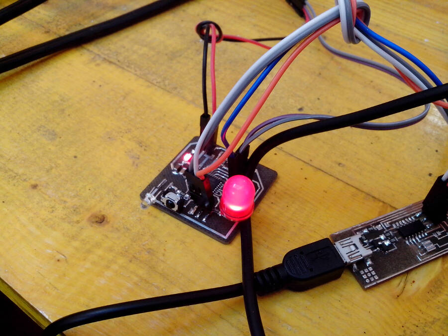
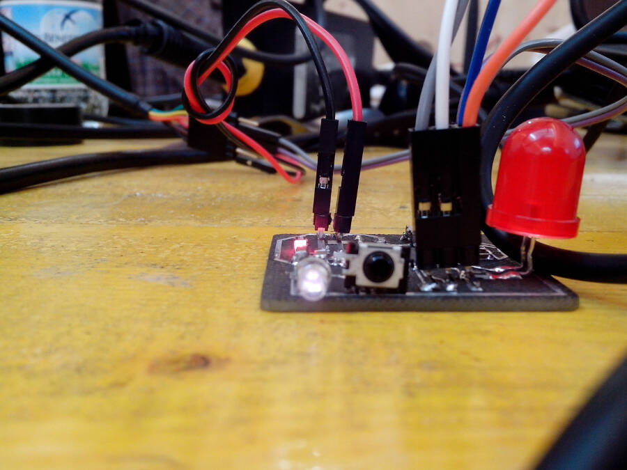
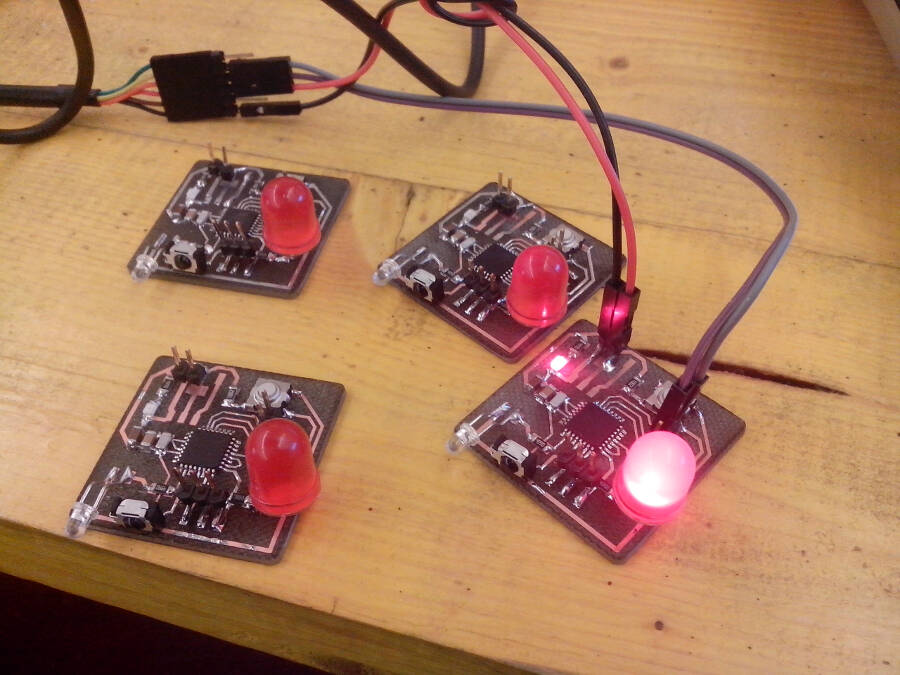

13. Networking and Communications
Project
I've always been fashinated by the fact that you can simulate complex behaves using simple modules that work like a flock. I remember an experiment done with "shy" robots vs. "friendly" robots. The first ones were moving away, as soon as they detected another machine, while the others were going in the directions of the closer robot to "stay together". To do somethign like this it would be too complex and expensive, but still i want to make boards that influence each others.
The board has a IR led, a red led and a IR receiver. When turned on, they pick a random value in a range and they blink with that frequence. The IR led is transmitting the value of delay between the blinks. If another board is detecting that value, it compares it with it's own, increasing or decreasing it by a fixed amount (let's say 10 milliseconds), to move closer to the value it read. My hope is that all the boards, will get to the same value and blink together.
The board
Design the board took me almost one day of work (considering the optimization, choosing the components and prepare the file for the laser). It's still a lot but at least i had no problem this time.
Here the board:

Final Boards (ATMEGA 48 // ATMEGA 328p)
At the beginning I planned to use a ATMEGA 48, but I soon realized that the memori was definitely too little.
I did the first tests following this tutorial.
Here the specifications to add to Boards.txt in the arduino IDE
################################################################# atmega48.name=ATmega48 (8 MHz internal clock) atmega48.upload.protocol=stk500 atmega48.upload.tool=avrdude atmega48.upload.maximum_size=4094 atmega48.upload.speed=38400 atmega48.bootloader.tool=avrdude atmega48.bootloader.low_fuses=0xE2 atmega48.bootloader.high_fuses=0xDF atmega48.bootloader.extended_fuses=0x01 atmega48.bootloader.path=arduino:atmega8 atmega48.bootloader.file=ATmegaBOOT.hex atmega48.bootloader.unlock_bits=0x3F atmega48.bootloader.lock_bits=0x0F atmega48.build.mcu=atmega48 atmega48.build.f_cpu=8000000L atmega48.build.core=arduino:arduino atmega48.build.variant=arduino:standard ################################################################
After the first test I switched back to the ATMEGA 328p. I made four boards (1 ATMEGA 48 and 3 ATMEGA 328p).
To test the boards i upload the blink to both the red led and the IR led (visible witht the camera of the cellphone)


To Test the boards and the possible problems I divided the sketch in two parts. The first half is to make the led blinking to a certain speed (random and different everytime you reset it), compare its speed to another (in the test a fixed value), and step by step adjust the original random speed to the value.
Here the sketch
const int ledPin = 13;
int ledState = LOW;
long previousMillis = 0;
unsigned long currentMillis = 0;
long interval = 1000;
unsigned long ran = 0;
unsigned long ran1 = 5000;
void setup() {
Serial.begin (9600);
pinMode(ledPin, OUTPUT);
randomSeed(analogRead(1));
}
void loop()
{
ran = random(50, 150);
ran=ran*10;
ran1 = 50;
while (1)
{
currentMillis = millis();
Serial.println(ran);
interval = ran;
if (currentMillis - previousMillis > interval) {
previousMillis = currentMillis;
if (ran > ran1)
{
ran = ran - 10;
}
else
{
ran = ran + 10;
}
if (ledState == LOW)
ledState = HIGH;
else
ledState = LOW;
digitalWrite(ledPin, ledState);
delay (10);
}
}
}
The sketch was working pretty well, but i had some trouble with the boards. It seems that the flux we are using can cause some troubles: the behave of the boards, but one, is not reliable. 
Communication
WIP ...